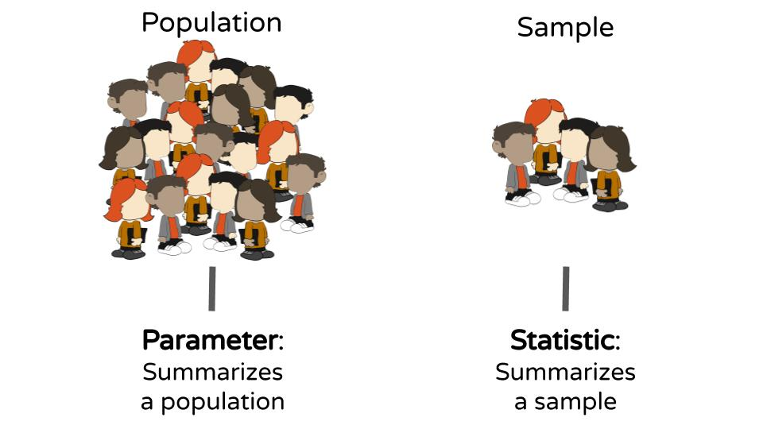
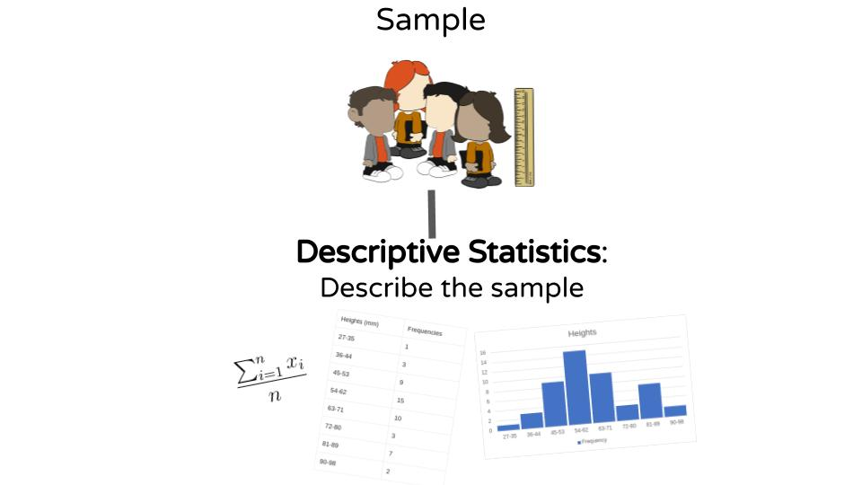
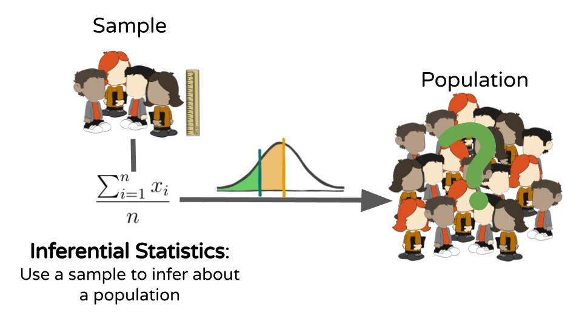

A Statistic is a numerical summary based on a sample.
Parameter is a numerical summary of a population

Descriptive Statistic consist of organizing and summarizing data. Descriptive statistics describe data through numerical summaries, tables, and graphs.

Inferential Statistic uses methods that take results from a sample, extends them to the population, and measures the reliability of the result.
